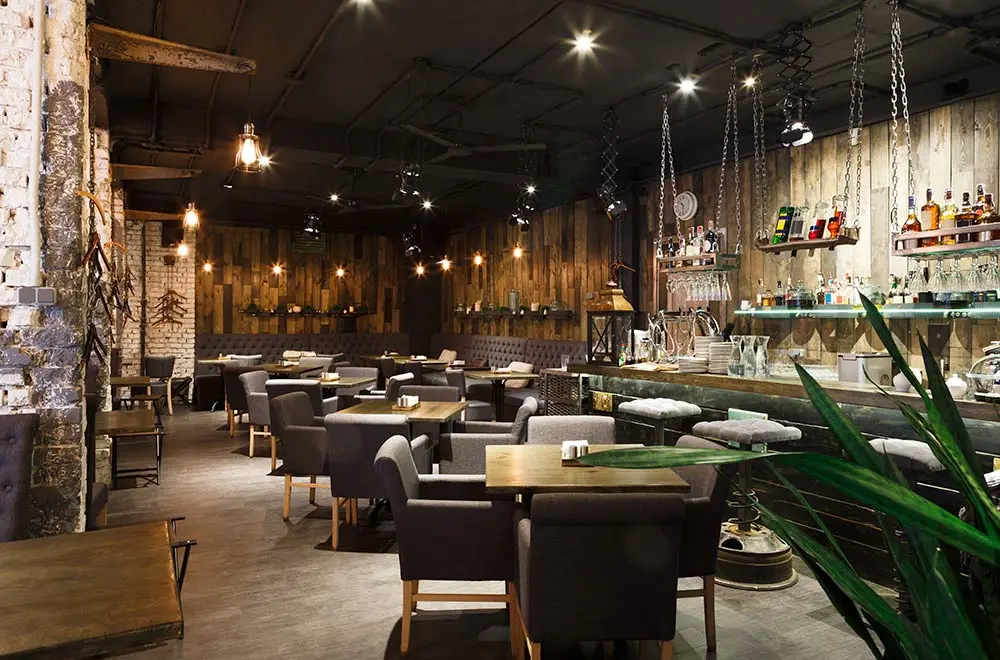

About Stones Throw
A neighborhood bar and kitchen built around great drinks, comforting food, and evenings that linger a little longer.
Stones Throw was created as a place where locals could unwind, connect, and enjoy thoughtfully crafted cocktails alongside familiar comfort plates.
Whether you're stopping by for happy hour or settling in for a full evening, our focus is simple: quality ingredients, warm hospitality, and a relaxed atmosphere that feels like home.
🍸 Craft Cocktails
Classics and house originals made with care.
🍽 Comfort Plates
Familiar flavors done right.
📍 Local Favorite
Proudly serving the Cape Coral community.